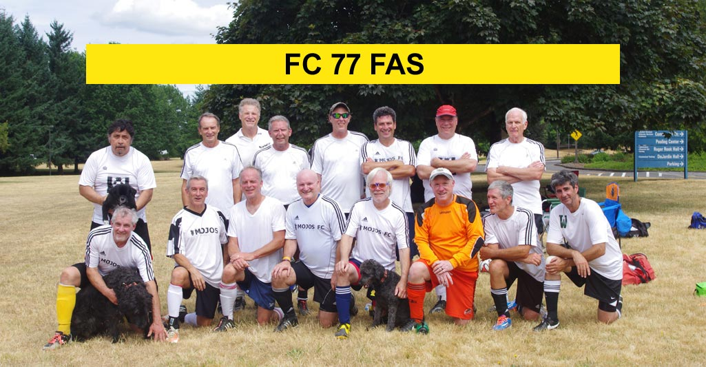

Schedule/Results
 |
|
Beginning with the 2016 Spring Season, FC77 FAS, a team of former GE players and new senior players has taken its place in GPSD's Over 58 League. ( The former GE has detached itself from FC77 and operates as an unaffiliated team - New Kings.) Inspiration for the Team's name: Club Deportivo Futbolistas Asociados Santanecos, commonly known as FAS (pronounced "fas"), is a professional Salvadoran football club based in Santa Ana, El Salvador. They are rivals with Águila. FAS currently play in the Primera División de Fútbol Profesional, their home ground being the Estadio Oscar Quiteño. Their mascot is the Tiger. They are 17 time winners of the Salvadoran Primera División and CONCACAF Champions' Cup Winner in 1979. You can read more here.
|
Schedule/Results |